A 1-metre blended flying wing that maps crops in RGB and near-infrared for plant-health analysis. Rev D applies what the Dart-80 build taught: the wing bending now runs through a straight carbon carry-through instead of three belly bolts, every wing part is a solid model for the slicer, and every part was checked for a real way in and for support-free printing. That audit also found and fixed eight faults that were in Rev C.
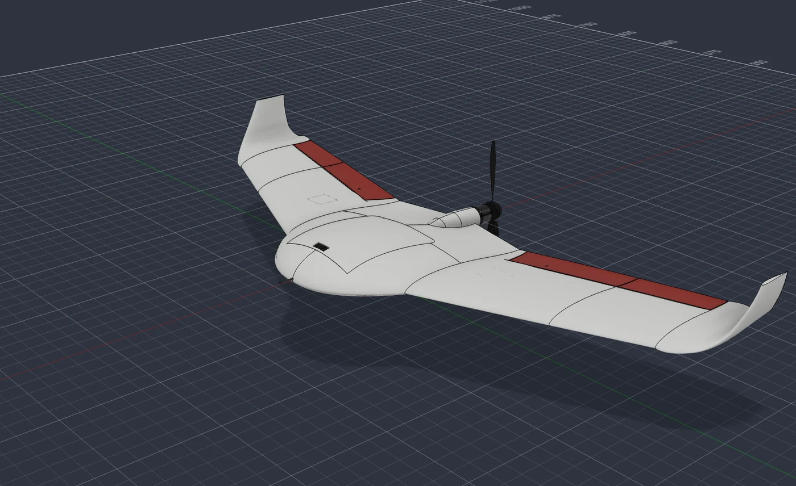
Fusion model, Rev D. Red = elevons. Everything white is printed in LW-ASA.
Rev C looked finished. Checked the way the Dart-80 was checked, it had a weak wing joint, parts that could not move or be assembled, and parts that could not be printed as drawn. All of them are fixed in Rev D.
| Area | Rev C | Rev D |
|---|---|---|
| Wing bending across the body | Two swept 6×4 tubes ending in the centre body; the moment crossed the y = 0 seam through 3 M3 inserts on the belly. SF ≈ 1.1 at ultimate. | Straight carry-through: Ø6 solid carbon joiner across the body, 8×6 tube in each wing. SF 3.2. The seam no longer carries wing bending. |
| Wing panels | 0.6 mm shells with ribs and sleeves. | Solid models; the slicer sets walls and infill (2 walls + 6% gyroid), with walls around every bore. |
| Elevons | Flat front face 0.5 mm behind the hinge: jammed beyond about ±10°. Three wing ribs ran through the elevon. Outer elevon had no drive at all. | Round nose in a cove (0.6 mm gap): free to ±30°. Ribs cleared. A Ø2 carbon torque rod couples both halves. |
| Spar path | Two thin slices inside W2 blocked the spar bore. | New straight bore, verified clear end to end. |
| Servos | Servo case 1.4 mm into its cover. | Servos seated 2.4 mm higher; screw holes, arms and pushrods follow. |
| Hatch | Front "tongue" only rested on a ledge; two rear magnets held the whole hatch against suction. | Front hood + tongue lock the front edge. Tilt the rear 4°, slide aft to open. |
| Control horn | Printed in foamed LW-ASA, a floating plate in the print. | 1.5 mm G10 horn bonded in a slot. |
| Printability | Hatch interior (232 cm²), winglet curve (60 cm²), centre-body root ribs (bridges over 100 mm) needed support. | Re-oriented and re-shaped: nothing needs support except a brim on three parts and a raft under the 0.8 mm servo covers. |
At 6 g ultimate (4 g limit × 1.5) and 1234 g, the Schrenk lift distribution puts 8.0 N·m of bending on the centreline and 4.1 N·m at the wing root. In Rev C that moment had to cross the centre body from one swept spar socket to the other, and the only tie across the y = 0 seam was three M3 inserts near the belly, all on the tension side with a 30 mm lever arm. That is the Dart-80's original mistake again, so it gets the Dart-80's fix: one straight load path.
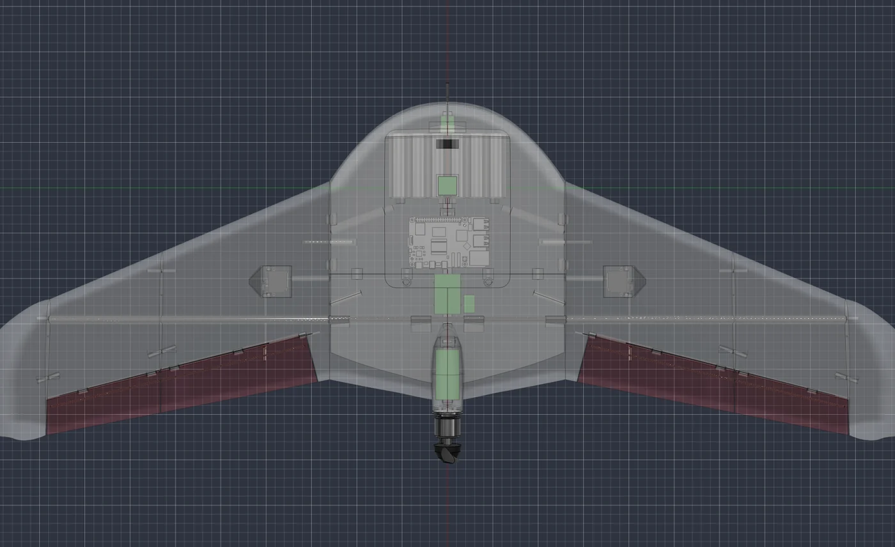
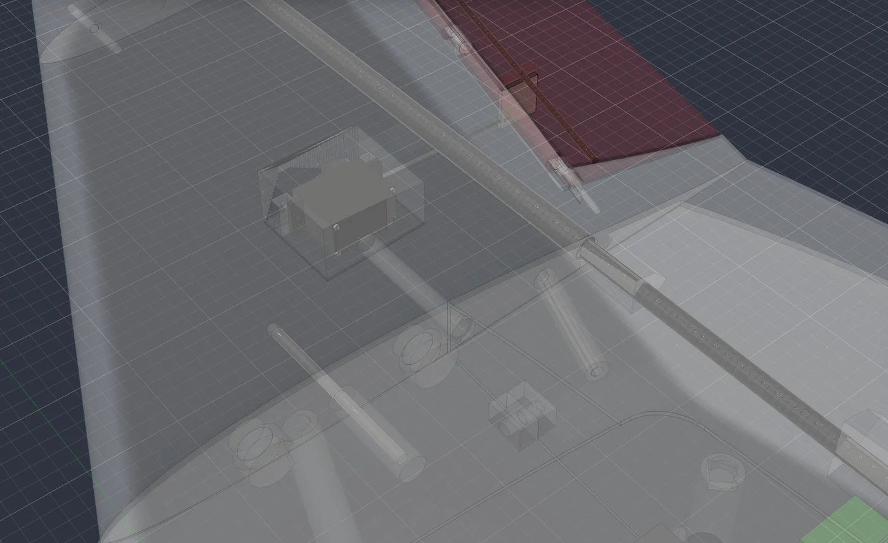
| Check (ultimate) | Rev | Load | Allowable | Unit | Margin | Note |
|---|---|---|---|---|---|---|
| 6x4 swept spar at the wing root (y 130) | Rev C | 257.36 | 700 | MPa | SF 2.7 | |
| Centre seam: 3 M3 inserts on the belly carry the wing bending | Rev C | 133.74 | 150 | N per insert | SF 1.1 | couple arm ~30 mm, two inserts effective |
| O6 solid carbon joiner at the centreline | Rev D | 378.4 | 1200 | MPa | SF 3.2 | |
| 8x6 wing tube at the root (y 130) | Rev D | 119.77 | 700 | MPa | SF 5.8 | |
| Wing tube bore in W1 (bearing, 307 mm bonded length) | Rev D | 0.03 | 8 | MPa | SF 244.3 | |
| Joiner webs in the centre body (4 webs, bearing on O6) | Rev D | 0.36 | 8 | MPa | SF 22.3 | web 7 mm thick |
| Anti-rotation pin O3 (85 mm ahead of the spar), bearing | Rev D | 0.13 | 8 | MPa | SF 61.6 | root torque 0.86 N·m |
| Magnets vs winglet side force (beta 10 deg, 25 m/s) | Rev D | 1.3 | 40 | N | SF 30.8 | wings slide along y: drag has no pull-off component |
| Servo torque at 25 m/s, 20 deg (ES08MD II 0.196 N·m) | Rev D | 0.12 | 0.2 | N·m | SF 1.6 | hinge moment 0.165 N·m |
| G10 horn bond (160 mm² epoxy) | Rev D | 0.08 | 10 | MPa | SF 128.7 | |
| Elevon torque rod O2 (elevon 2 share 40 %) | Rev D | 42.11 | 80 | MPa | SF 1.9 | |
| Hatch retention (Cp -1.2 at 25 m/s): 2 magnets + front hood | Rev D | 10.75 | 40 | N | SF 3.7 | |
| Motor mount: 4 M3 inserts, 12 N thrust x 1.5 | Rev D | 4.5 | 150 | N per insert | SF 33.3 |
Allowables are conservative assumptions for foamed LW-ASA (0.6 g/cm³: 5 MPa across layers, 8 MPa bearing, 150 N per M3 insert) and datasheet values for carbon. Print the coupons listed under Test before flying.
Each wing part is now the outer shape minus its functional voids only: tube and pin bores, seam dowels, magnet pockets, the servo bay, the lead channel and the hinge. The slicer puts two walls around every bore, so each carbon part sits in a printed sleeve tied to the skins by the infill. Printed at 2 walls and 6% gyroid, the solid W1 weighs about the same as Rev C's ribbed shell.
The elevon hinge was rebuilt. The elevon nose is a cone around the hinge axis at the local half-thickness (4.1 mm at the root, 2.7 at the tip), running in a matching cove with 0.6 mm clearance, and the wing lip was relieved wherever the elevon passes over ±32°. The printed knuckles and the Ø1.75 filament pin are kept. The inboard elevon end is cut square to the hinge axis, so the elevon slides off its knuckles and deflects without touching the wing root.
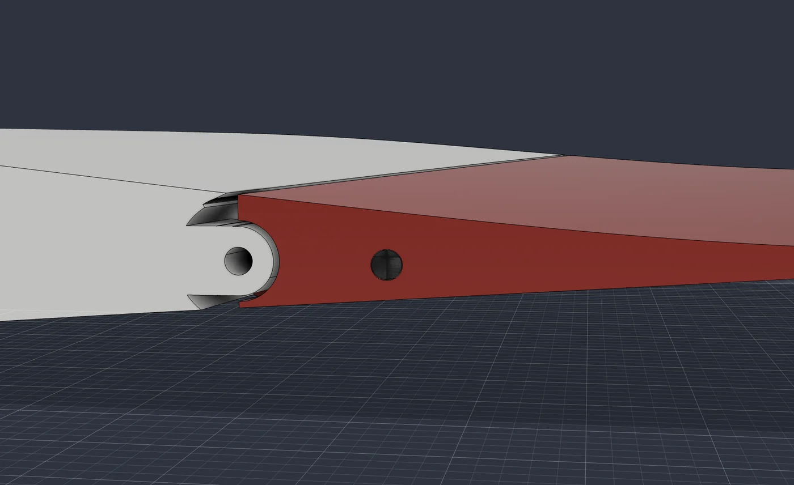
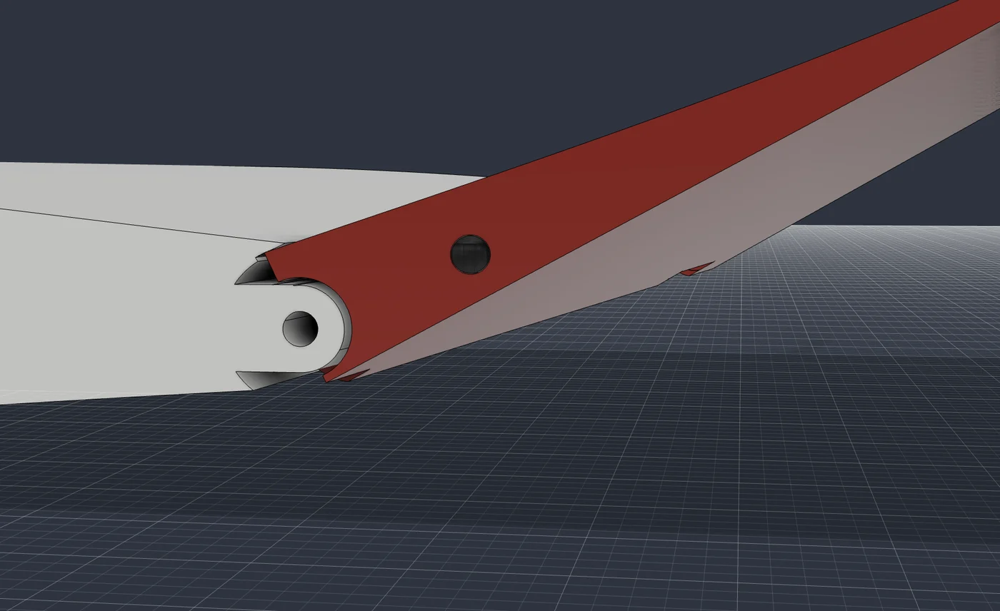
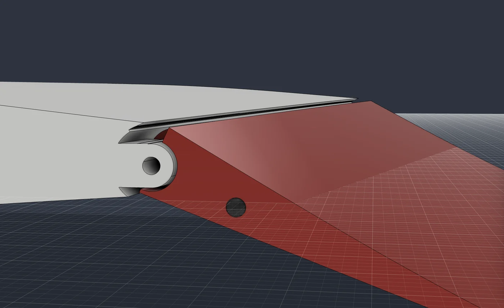
Each part was moved along the direction it has to travel and intersected with its neighbours at several distances; any overlap means it cannot get there. Deflections were checked the same way by rotating the elevons about the hinge axis. All results below are zero intersection.
| Joint / motion | Direction | Result |
|---|---|---|
| Wing unit off the centre body (joiner, pin, magnets) | +y, 0.3–160 mm | clear |
| W2 + winglet onto the W1 tube; winglet onto W2 | +y | clear |
| Joiner through the centre body | +y, 560 mm | clear |
| Elevons off their knuckles | square to hinge, 15 mm | clear |
| Elevon deflection, both sides, with horn | −30° … +30° | clear |
| Centre-body halves, front/rear pieces | ±y, ±x | clear |
| Hatch: locked front, tilt 4° and slide aft | +z blocked, then rotate + x | as designed |
| All printed parts vs. each other, hardware, cells, cameras, servos | at rest | no overlap |
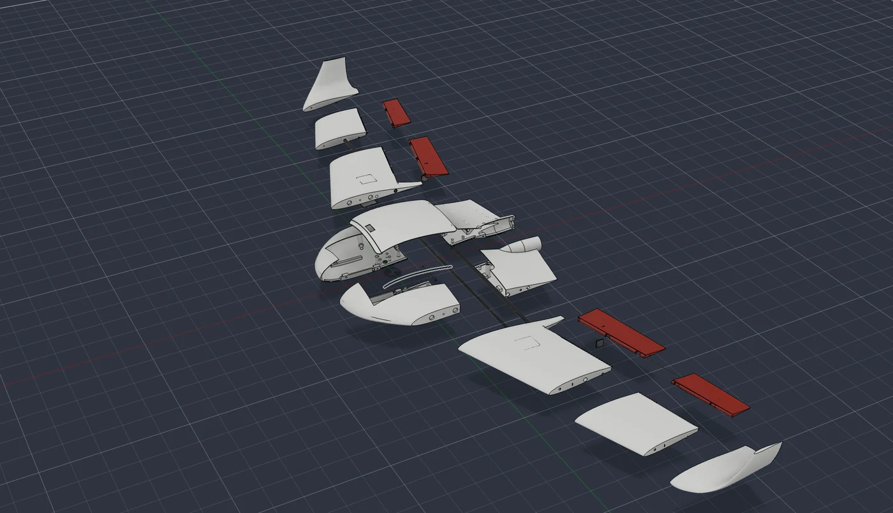
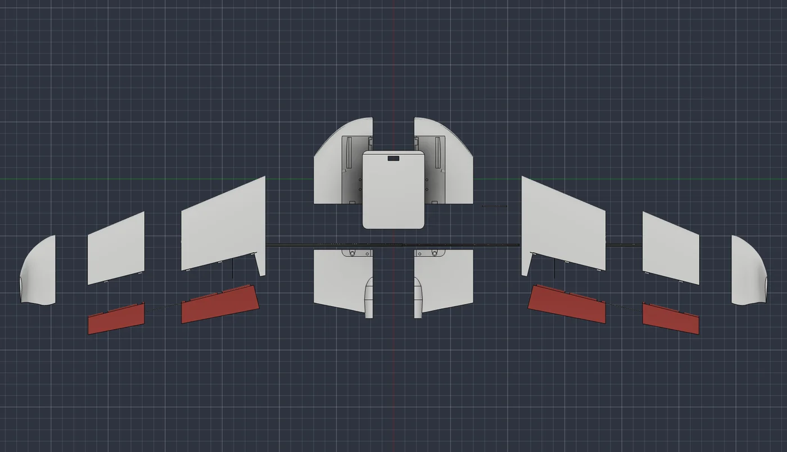
Every STL was put in its print orientation and searched for faces within 45° of horizontal facing down. Orientations were chosen per part by scoring ten candidates, then the geometry was changed where the best orientation still left a ceiling:
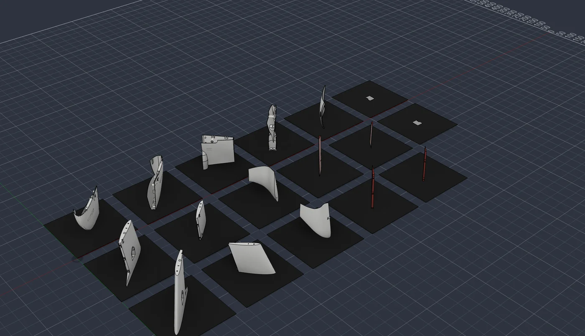
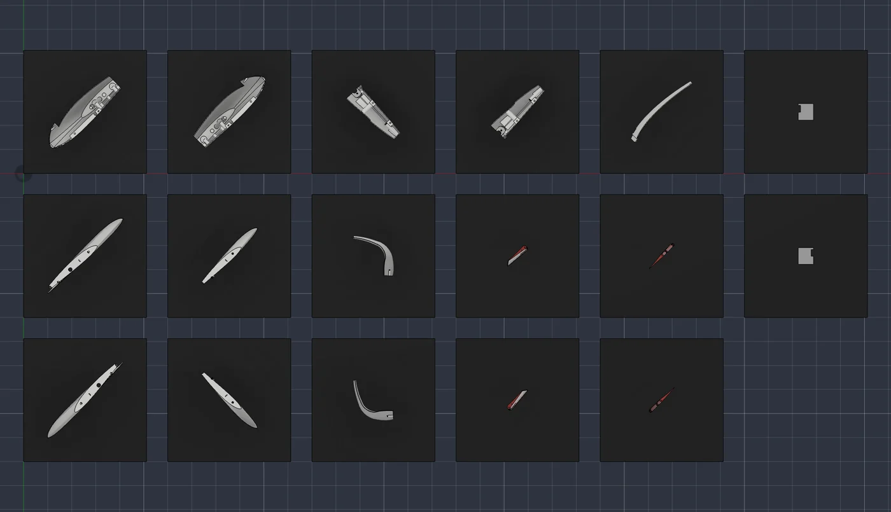
| Part | Orientation | Height mm | Footprint mm | Support | Mass g | Hours |
|---|---|---|---|---|---|---|
CB_FrontRight | root-rib face (y = 130) on the bed | 130 | 150 | none | 37 | 3.0 |
CB_FrontLeft | root-rib face (y = 130) on the bed | 130 | 150 | none | 37 | 3.0 |
CB_RearRight | motor face (x = 246) on the bed | 151 | 114 | none | 35 | 2.8 |
CB_RearLeft | motor face (x = 246) on the bed | 151 | 114 | none | 35 | 2.8 |
Hatch | standing on its left edge, brim | 136 | 128 | brim | 19 | 1.7 |
W1_R | standing on the root face | 185 | 158 | none | 48 | 3.8 |
W1_L | standing on the root face | 185 | 158 | none | 48 | 3.8 |
W2_R | standing on the y = 315 joint face | 125 | 118 | none | 24 | 2.1 |
W2_L | standing on the y = 315 joint face | 125 | 118 | none | 24 | 2.1 |
WingletBlend_R | standing on its leading edge, brim | 154 | 84 | brim | 17 | 1.5 |
WingletBlend_L | standing on its leading edge, brim | 154 | 84 | brim | 17 | 1.5 |
Elevon1_R | standing on the inboard end (square to the hinge) | 174 | 43 | none | 11 | 1.0 |
Elevon1_L | standing on the inboard end (square to the hinge) | 174 | 43 | none | 11 | 1.0 |
Elevon2_R | standing on the inboard end | 123 | 53 | none | 7 | 0.7 |
Elevon2_L | standing on the inboard end | 123 | 53 | none | 7 | 0.7 |
ServoCover_R | outer face up | 3 | 35 | 2-layer raft | 0 | 0.3 |
ServoCover_L | outer face up | 3 | 35 | 2-layer raft | 0 | 0.3 |
| Total, 17 parts | LW-ASA, Bambu 256 mm bed | 376 | 32.1 | |||
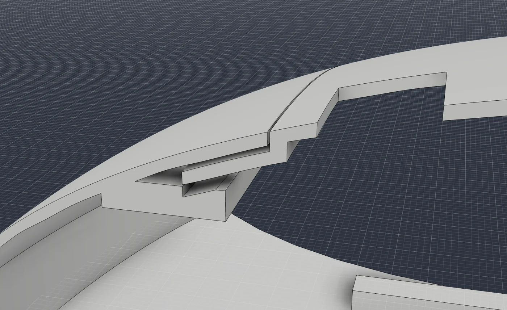
The outer shape did not change in Rev D except for the hinge details, so the Rev C CFD still applies: simpleFoam, k-ω SST, half model, ≈0.8 M cells, 15 m/s. Neutral point x = 83.3 mm; with CG 69.5 mm the static margin is 6.2% and the wing needs almost no elevon reflex at cruise.
| α | CL | CD | L/D | Cm @ x=54 |
|---|---|---|---|---|
| 1° | 0.002 | 0.0224 | 0.0 | +0.0188 |
| 4.8° | 0.277 | 0.0271 | 10.2 | -0.0155 |
| 7° | 0.435 | 0.0353 | 12.3 | -0.0365 |
| 10° | 0.637 | 0.0554 | 11.5 | -0.0656 |
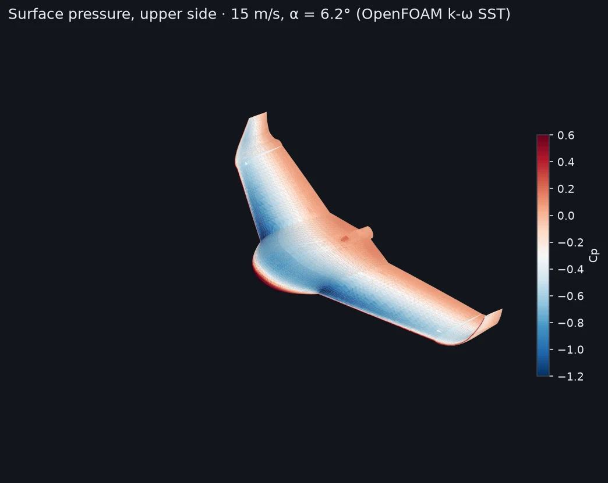
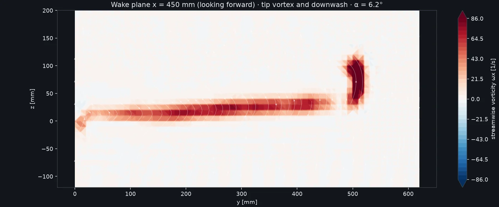
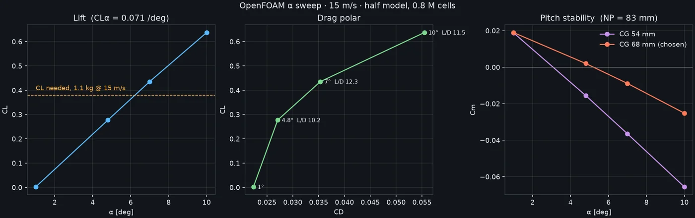
| Item | g | x mm | $ |
|---|---|---|---|
| Centerbody, 4 printed pieces (LW-ASA) | 143.5 | 83.1 | 14 |
| Hatch (LW-ASA) | 19.0 | 21.1 | 2 |
| Wing W1 x2 (solid, 2 walls + 6 % gyroid) | 95.4 | 99.2 | 8 |
| Wing W2 x2 (solid) | 48.8 | 153.3 | 4 |
| Blended winglets x2 (solid) | 33.4 | 198.0 | 2 |
| Elevon 1 x2 (solid, round nose) | 21.4 | 197.5 | 2 |
| Elevon 2 x2 (solid, round nose) | 13.4 | 231.1 | 1 |
| Servo covers x2 | 1.0 | 103.1 | 0 |
| Carbon joiner rod O6 solid, 550 mm | 24.1 | 145.0 | 9 |
| Carbon wing tubes 8x6, 2 x 307 mm | 20.9 | 145.0 | 10 |
| Carbon elevon torque rods O2, 2 x 280 mm | 2.8 | 207.4 | 3 |
| Carbon anti-rotation pins O3 (2) + seam dowels O3 (8) | 4.7 | 150.0 | 4 |
| G10 control horns 1.5 mm (2) | 2.0 | 183.4 | 3 |
| PETG filament hinge pins 1.75 mm (2) | 1.0 | 200.0 | 0 |
| Magnets 10x3 N52 (8) | 14.4 | 60.0 | 6 |
| M3 bolts + heat-set inserts (7), M2.5/M2 inserts, grommets | 16.0 | 70.0 | 8 |
| Servo EMAX ES08MD II (2) | 26.0 | 103.9 | 20 |
| Servo arms + 1.2 mm pushrods (2) | 3.0 | 130.0 | 3 |
| Raspberry Pi 5 4 GB + heatsink + SD | 56.0 | 60.0 | 75 |
| Camera Module 3 + NoIR (+720 nm LP) + cables | 16.0 | 52.5 | 65 |
| Matek H743-WLITE | 22.0 | 117.0 | 70 |
| ELRS receiver | 5.0 | 128.0 | 15 |
| Matek M10Q-5883 GPS | 8.0 | 0.0 | 30 |
| ASPD-4525 + pitot + tubing | 7.0 | -75.0 | 40 |
| ESC 40 A | 25.0 | 205.5 | 20 |
| SunnySky X2216 1100 KV + cross mount | 73.0 | 261.0 | 30 |
| Folding prop 9x6 + spinner + adapter | 18.0 | 288.0 | 12 |
| BEC 5 V 5 A, wiring, XT30 | 60.0 | 40.0 | 25 |
| Epoxy / CA (joints, tubes) | 8.0 | 120.0 | 0 |
| Li-ion 3S2P Molicel P45B flat + BMS | 445.0 | -23.9 | 55 |
| Total | 1234 | 69.5 | 536 |
Performance is the Rev C CFD result scaled to Rev D weight at the same lift coefficient (power ∝ W^1.5). Plan on the lower endurance until a logged flight calibrates it.
Centre body
Wings (each side)
Limits of this analysis